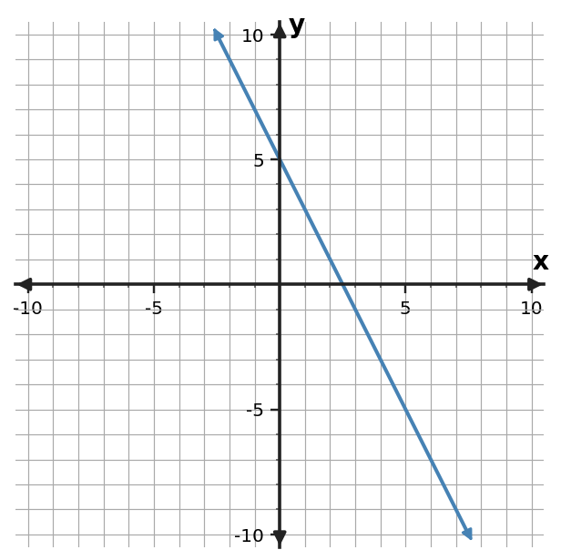
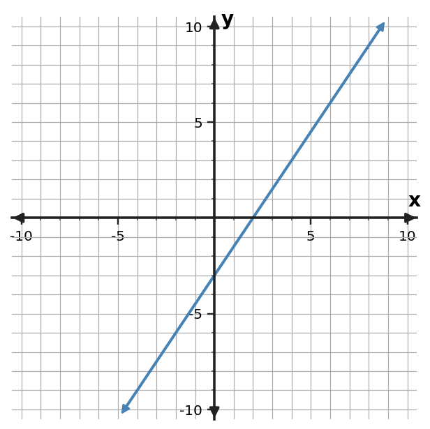
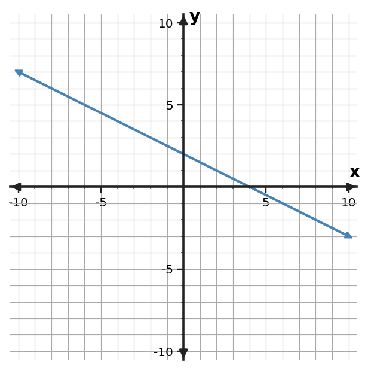

Problem 1
Partner signature:
Write a linear equation in slope-intercept form for the line through $(1,5)$ and $(5,-3)$.
Work alone first. Then find a partner, compare completed work, and work together on one unfinished or disagreed-on problem. Both students should understand the reasoning before signing. Find someone new and repeat.
Write a linear equation in slope-intercept form for the line through $(1,5)$ and $(5,-3)$.
Write a linear equation in slope-intercept form for the line through $(0,4)$ and $(4,8)$.
Write a linear equation in slope-intercept form for the line through $(2,-2)$ and $(6,6)$.
Write an equation in slope-intercept form for the relationship in the table.
| $x$ | $y$ |
|---|---|
| $-2$ | $12$ |
| $0$ | $8$ |
| $2$ | $4$ |
| $4$ | $0$ |
Write an equation in slope-intercept form for the relationship in the table.
| $x$ | $y$ |
|---|---|
| $-2$ | $-3$ |
| $0$ | $1$ |
| $2$ | $5$ |
| $4$ | $9$ |
Write an equation in slope-intercept form for the relationship in the table.
| $x$ | $y$ |
|---|---|
| $-2$ | $-4$ |
| $0$ | $-3$ |
| $2$ | $-2$ |
| $4$ | $-1$ |
Write an equation in slope-intercept form for the graphed line. Use graph features as evidence.

Write an equation in slope-intercept form for the graphed line. Use graph features as evidence.

Write an equation in slope-intercept form for the graphed line. Use graph features as evidence.

A bike rental costs 12 dollars to start plus 4 dollars per hour. Let $h$ be hours and $C$ be total cost. Write $C$ as a function of $h$. Identify the hourly charge and the initial charge in your equation.
A student has 25 dollars and saves 7 dollars each week. Let $w$ be weeks and $S$ be savings. Write $S$ as a function of $w$. Identify the weekly change and the starting savings.
A candle is 22 cm tall and burns down 2 cm each hour. Let $h$ be hours and $H$ be height. Write $H$ as a function of $h$. Identify the hourly change and the initial height.
For $y=\frac{1}{2}x+5$, explain the roles of $m$ and $b$. Then give one ordered pair that must lie on the line.
For $y=-\frac{3}{2}x+10$, explain the roles of $m$ and $b$. Then give one ordered pair that must lie on the line.
For $y=-2x+14$, explain the roles of $m$ and $b$. Then give one ordered pair that must lie on the line.
A linear relationship is represented by $y=3x-2$. Write a different equation that is equivalent to it after moving all terms to one side, and verify that $(7,19)$ satisfies both forms.
A linear relationship is represented by $y=2x+3$. Write a different equation that is equivalent to it after moving all terms to one side, and verify that $(6,15)$ satisfies both forms.
A linear relationship is represented by $y=-2x-1$. Write a different equation that is equivalent to it after moving all terms to one side, and verify that $(3,-7)$ satisfies both forms.
Rewrite $-2(x+6)$ as an equivalent expression, then verify equivalence at $x=-1$.
Rewrite $4(x+1)$ as an equivalent expression, then verify equivalence at $x=2$.
Rewrite $3(x+2)$ as an equivalent expression, then verify equivalence at $x=4$.
Write a linear equation for the table and state the slope and starting value.
| $x$ | $y$ |
|---|---|
| $0$ | $-3$ |
| $2$ | $-2$ |
| $4$ | $-1$ |
Write a linear equation for the table and state the slope and starting value.
| $x$ | $y$ |
|---|---|
| $0$ | $-2$ |
| $2$ | $4$ |
| $4$ | $10$ |
Write a linear equation for the table and state the slope and starting value.
| $x$ | $y$ |
|---|---|
| $0$ | $1$ |
| $2$ | $5$ |
| $4$ | $9$ |
$m=-2$ and $b=7$, so $y=-2x+7$.
$m=1$ and $b=4$, so $y=x+4$.
$m=2$ and $b=-6$, so $y=2x-6$.
The constant rate is $-2$ and the value at $x=0$ is $8$, so $y=-2x+8$.
The constant rate is $2$ and the value at $x=0$ is $1$, so $y=2x+1$.
The constant rate is $\frac{1}{2}$ and the value at $x=0$ is $-3$, so $y=\frac{1}{2}x-3$.
The graph has slope $-2$ and $y$-intercept $5$, so $y=-2x+5$.
The graph has slope $\frac{3}{2}$ and $y$-intercept $-3$, so $y=\frac{3}{2}x-3$.
The graph has slope $-\frac{1}{2}$ and $y$-intercept $2$, so $y=-\frac{1}{2}x+2$.
$C=4h+12$. The slope $4$ is the change in C per unit of h; the intercept $12$ is the starting value.
$S=7w+25$. The slope $7$ is the change in S per unit of w; the intercept $25$ is the starting value.
$H=-2h+22$. The slope $-2$ is the hourly change; the intercept $22$ is the initial height.
$m=\frac{1}{2}$ is the constant rate of change and $b=5$ is the value when $x=0$. For example, $(2,6)$ lies on the line.
$m=-\frac{3}{2}$ is the constant rate of change and $b=10$ is the value when $x=0$. For example, $(2,7)$ lies on the line.
$m=-2$ is the constant rate of change and $b=14$ is the value when $x=0$. For example, $(2,10)$ lies on the line.
One equivalent form is $3x-y-2=0$. Substituting $x=7$ and $y=19$ makes both equations true.
One equivalent form is $2x-y+3=0$. Substituting $x=6$ and $y=15$ makes both equations true.
One equivalent form is $-2x-y-1=0$. Substituting $x=3$ and $y=-7$ makes both equations true.
The equivalent expression is $-2x-12$. At $x=-1$, both forms equal $-10$.
The equivalent expression is $4x+4$. At $x=2$, both forms equal $12$.
The equivalent expression is $3x+6$. At $x=4$, both forms equal $18$.
$y=\frac{1}{2}x-3$; slope $\frac{1}{2}$, starting value $-3$.
$y=3x-2$; slope $3$, starting value $-2$.
$y=2x+1$; slope $2$, starting value $1$.